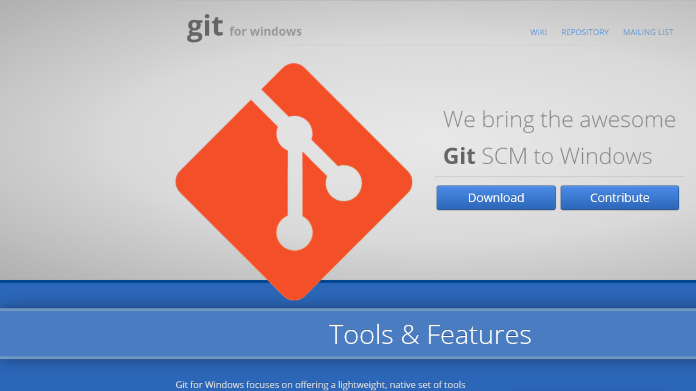
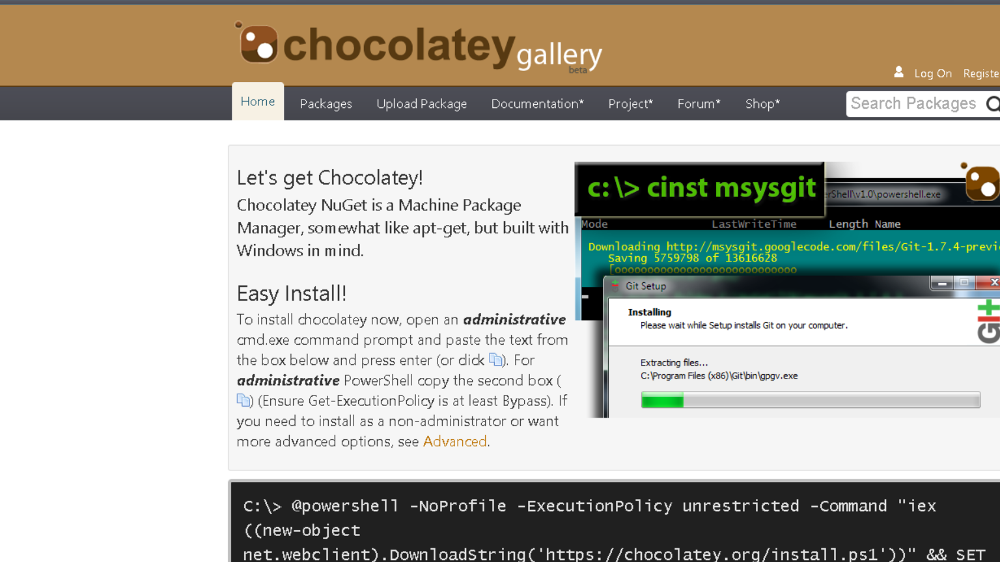
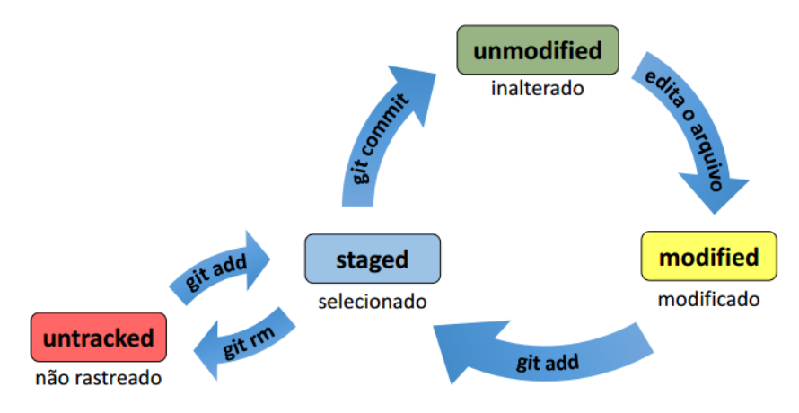
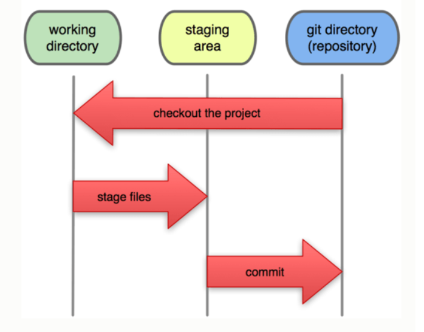

Git
do init ao push
José Barbosa - @_kiide
About Me?
- Desenvolvedor na ARCNET
- .NET Developer
- MCP (quase MCSD - Web Apps)
- Palestrante do .NET Coders
Contact
- Github: https://github.com/kiide
- Twitter: https://twitter.com/_kiide
What is Git?
- SCM como Subversion, TFS (Version Control)
- Git != Subservsion != TFS
- Criado por Linus Torvalds
- Eficiente (escrito em C)
- Git == Distribuído
Sistemas de Controle de Versão Centralizados

Sistemas de Controle de Versão Distribuídos

Why use Git?
- Online e Offline
- Multi-plataforma, gratuito, open source, rápido...
- Performance (é muito importante, isso afeta como você trabalha e a qualidade)
- Depois que você aprende, você não vive mais sem!
- Github <3<3<3
Installation
Windows
http://git-scm.com/ | http://msysgit.github.io/ Windows - Chocolatey
http://msysgit.github.io/ Ubuntu
$ sudo apt-get install git
Mac
$ brew install git
First Commands
- Leia o manual do git para os comandos mais usados
- Leia o feedback do git
git help <comand>
$ git help
$ git help init
git init
$ git init
git clone <repository>
$ git clone https://github.com/twbs/bootstrap.git
git status
$ git status
git diff
$ git diff
git add <filter>
$ git add .
git commit <options>
$ git commit -m "First commit"
File Status Lifecycle
Git Areas
Git Workflow